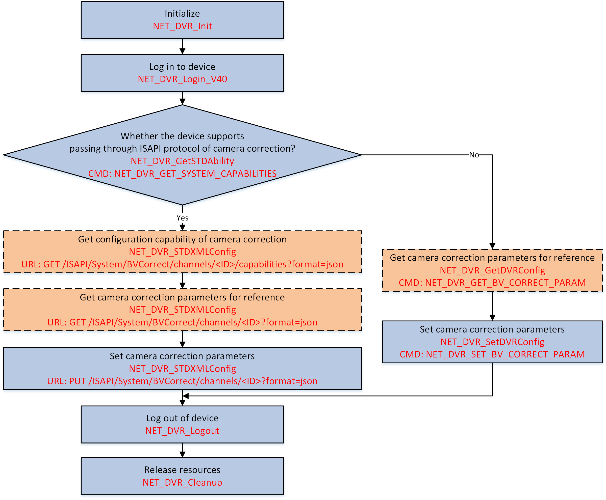

If the image distortion occurs, you can configure camera parameters (such as focal length, camera position, lens distortion coefficient, etc.) to correct the lens distortion for getting the normal images.
Make sure you have called NET_DVR_Init to initialize the development environment.
Make sure you have called NET_DVR_Login_V40 to log in to the device.

Figure 1 Programming Flow of Configuring Camera CorrectionThe node <isSupportBVCorrect> is returned in the capability message XML_DeviceCap and its value is "true": the device supports passing through ISAPI protocol of camera correction, and continue to perform the steps below.
Call NET_DVR_STDXMLConfig to pass through the request URL: GET /ISAPI/System/BVCorrect/channels/<ID>/capabilities?format=json to get the configuration capability of camera correction and know the supported parameters.
The configuration capability is returned in the message JSON_BVCorrectParamCap by lpOutputParam.
Call NET_DVR_STDXMLConfig to pass through the request URL: GET /ISAPI/System/BVCorrect/channels/<ID>?format=json to get the default or configured camera correction parameters for reference.
The camera correction parameters are returned in the message JSON_BVCorrectParam by lpOutBuffer of lpOutputParam.
Call NET_DVR_STDXMLConfig to pass through the request URL: PUT /ISAPI/System/BVCorrect/channels/<ID>?format=json and set lpInBuffer of lpInputParam to the message JSON_BVCorrectParam to configure the camera correction parameters.
The node <isSupportBVCorrect> is not returned in the capability message XML_DeviceCap: perform the steps below.
Call NET_DVR_GetDVRConfig with command "NET_DVR_GET_BV_CORRECT_PARAM" (command No.: 3240) to get the default or configured camera correction parameters for reference.
The camera correction parameters are returned in the structure NET_DVR_BV_CORRECT_PARAM by the output buffer (lpOutBuffer).
Call NET_DVR_SetDVRConfig with command "NET_DVR_SET_BV_CORRECT_PARAM" (command No.: 3241) ans set the input buffer (lpInBuffer) to the structure NET_DVR_BV_CORRECT_PARAM for configuring the camera correction parameters.
Call NET_DVR_Logout and NET_DVR_Cleanup to log out of the device and release resources.